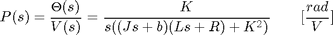
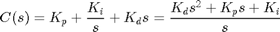
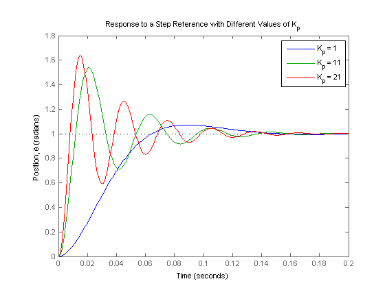
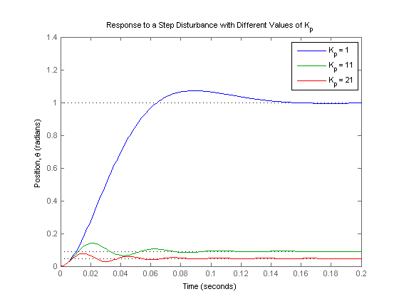
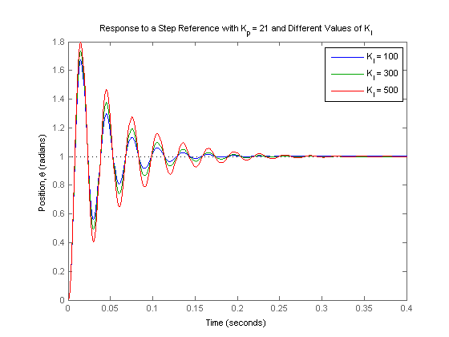
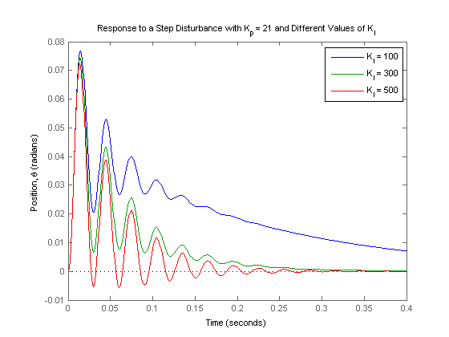
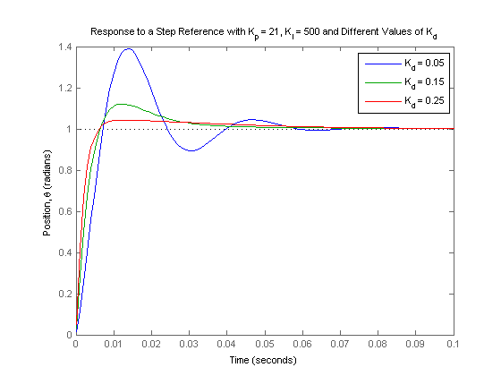
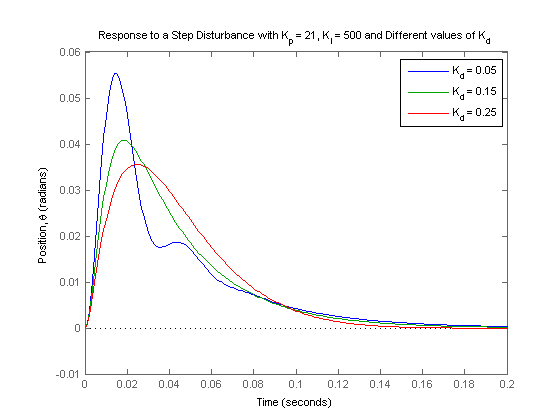

DC Motor Position: PID Controller Design
Key MATLAB commands used in this tutorial are: tf , step , feedback
Contents
From the main problem, the open-loop transfer function of the DC Motor is given as follows.
(1)
The structure of the control system has the form shown in the figure below.

For the original problem setup and the derivation of the above equations, please refer to the DC Motor Position: System Modeling page.
For a 1-radian step reference, the design criteria are the following.
- Settling time less than 0.040 seconds
- Overshoot less than 16%
- No steady-state error, even in the presence of a step disturbance input
Now let's design a PID controller and add it into the system. First create a new m-file and type in the following commands (refer to main problem for the details of getting these commands).
J = 3.2284E-6;
b = 3.5077E-6;
K = 0.0274;
R = 4;
L = 2.75E-6;
s = tf('s');
P_motor = K/(s*((J*s+b)*(L*s+R)+K^2));
Recall that the transfer function for a PID controller has the following form.
(2)
Proportional control
Let's first try using a proportional controller with gain ranging from 1 to 21. An array of LTI models, each with a different proportional gain, can be built using a for loop. The closed-loop transfer functions can be generated using the feedback command. Add the following code to the end of your m-file and run it in the MATLAB command window:
Kp = 1; for i = 1:3 C(:,:,i) = pid(Kp); Kp = Kp + 10; end sys_cl = feedback(C*P_motor,1);
Now let's see what the step responses look like. Add the following code to the end of your m-file and again run it in the command window. You should generate the plot shown in the figure below.
t = 0:0.001:0.2; step(sys_cl(:,:,1), sys_cl(:,:,2), sys_cl(:,:,3), t) ylabel('Position, \theta (radians)') title('Response to a Step Reference with Different Values of K_p') legend('K_p = 1', 'K_p = 11', 'K_p = 21')
Let's also consider the system's response to a step disturbance. In this case, we will assume a reference of zero and look at the how the system responds to the disturbance by itself. The feedback command can still be employed for generating the closed-loop transfer function where there is still negative feedback, however, now only the plant transfer function P(s) is in the forward path and the controller C(s) is considered to be in the feedback path. Refer back to the block diagram at the top of this page to see the structure of the system. Add the following to the end of your m-file and run it in the command window. You should generate the plot shown in the figure below.
dist_cl = feedback(P_motor,C); step(dist_cl(:,:,1), dist_cl(:,:,2), dist_cl(:,:,3), t) ylabel('Position, \theta (radians)') title('Response to a Step Disturbance with Different Values of K_p') legend('K_p = 1', 'K_p = 11','K_p = 21')
The above plots show that the system has no steady-state error in response to the step reference by itself, no matter the choice of proportional gain Kp. This is due to the fact that the plant has an integrator, that is, the system is type 1. However, the system has significant steady-state error when the disturbance is added. Specifically, the response due to the reference and disturbance applied simultaneously is equal to the sum of the two graphs shown above. This follows from the property of superposition that holds for linear systems. Therefore, to have zero steady-state error in the presence of a disturbance, we need the disturbance response to decay to zero. The larger the value of Kp the smaller the steady-state error is due to the disturbance, but it never reaches zero. Furthermore, employing increasingly larger values of Kp has the adverse effect of increasing the overshoot and settle time as can be seen from the step reference plot. Recall from the DC Motor Position: System Modeling page that adding an integral term will eliminate the steady-state error and a derivative term can reduce the overshoot and settling time.
PI control
Let's first try a PI controller to get rid of the steady-state error due to the disturbance. We will set Kp = 21 and test integral gains Ki ranging from 100 to 500. Change your m-file to the following and run in the command window. You should generate a figure like the one shown below.
Kp = 21; Ki = 100; for i = 1:5 C(:,:,i) = pid(Kp,Ki); Ki = Ki + 200; end sys_cl = feedback(C*P_motor,1); t = 0:0.001:0.4; step(sys_cl(:,:,1), sys_cl(:,:,2), sys_cl(:,:,3), t) ylabel('Position, \theta (radians)') title('Response to a Step Reference with K_p = 21 and Different Values of K_i') legend('K_i = 100', 'K_i = 300', 'K_i = 500')
Now let's see what happened to the step disturbance response. Change the following commands in your m-file and re-run in the command window. You should generate a plot like the one shown in the figure below.
dist_cl = feedback(P_motor,C); step(dist_cl(:,:,1), dist_cl(:,:,2), dist_cl(:,:,3), t) ylabel('Position, \theta (radians)') title('Response to a Step Disturbance with K_p = 21 and Different Values of K_i') legend('K_i = 100', 'K_i = 300', 'K_i = 500')
The integral control has reduced the steady-state error to zero, even when a step disturbance is present; that was the goal for adding the integral term. For the response to the step reference, all of the reponses look similar with the amount of oscillation increasing slightly as Ki is made larger. However, the response due to the disturbance changes significantly as the integral gain Ki is changed. Specifically, the larger the value of Ki employed, the faster the error decays to zero. We will choose Ki = 500 because the error due to the disturbance decays to zero quickly, even though the response to the reference has a longer settling time and more overshoot. We will attempt to reduce the settling time and overshoot by adding a derivative term to the controller.
PID control
Adding a derivative term to the controller means that we now have all three terms of the PID controller. We will investigate derivative gains Kd ranging from 0.05 to 0.25. Go back to the m-file and make the following changes. Running the altered m-file will generate a graph like the one shown below.
Kp = 21; Ki = 500; Kd = 0.05; for i = 1:3 C(:,:,i) = pid(Kp,Ki,Kd); Kd = Kd + 0.1; end sys_cl = feedback(C*P_motor,1); t = 0:0.001:0.1; step(sys_cl(:,:,1), sys_cl(:,:,2), sys_cl(:,:,3), t) ylabel('Position, \theta (radians)') title('Response to a Step Reference with K_p = 21, K_i = 500 and Different Values of K_d') legend('K_d = 0.05', 'K_d = 0.15', 'K_d = 0.25')
Let's see what happened to the step disturbance response, change the following commands in your m-file and re-run at the command line.
dist_cl = feedback(P_motor,C); t = 0:0.001:0.2; step(dist_cl(:,:,1), dist_cl(:,:,2), dist_cl(:,:,3), t) ylabel('Position, \theta (radians)') title('Response to a Step Disturbance with K_p = 21, K_i = 500 and Different values of K_d') legend('K_d = 0.05', 'K_d = 0.15', 'K_d = 0.25')
It looks like when Kd = 0.15, we can meet our design requirements. To determine the precise characteristics of the step response you can use the right-click menu of the step response plot, or you can use the MATLAB command stepinfo as shown below.
stepinfo(sys_cl(:,:,2))
ans =
RiseTime: 0.0046
SettlingTime: 0.0338
SettlingMin: 0.9183
SettlingMax: 1.1211
Overshoot: 12.1139
Undershoot: 0
Peak: 1.1211
PeakTime: 0.0121
From the above, we see that the response to a step reference has a settling time of roughly 34ms (< 40 ms), overshoot of 12% (< 16%), and no steady-state error. Additionally, the step disturbance response also has no steady-state error. So now we know that if we use a PID controller with
Kp = 21, Ki = 500, and Kd = 0.15,
all of our design requirements will be satisfied.